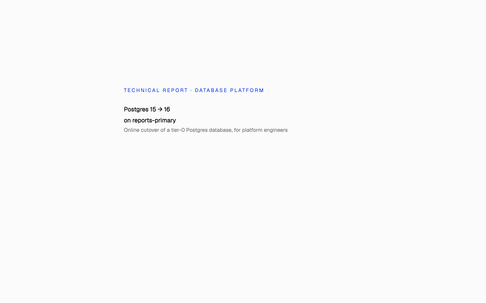
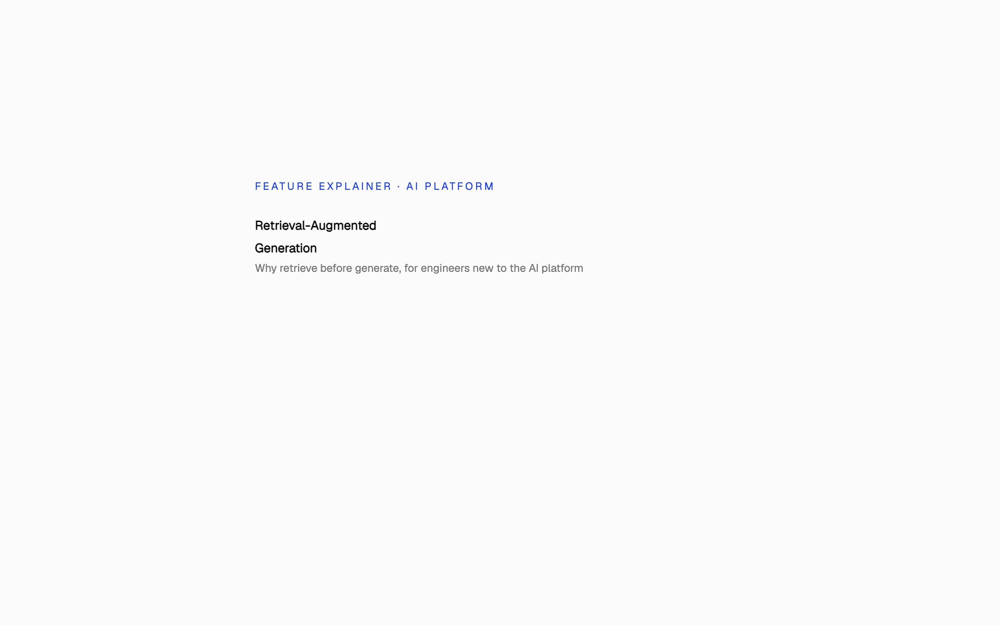
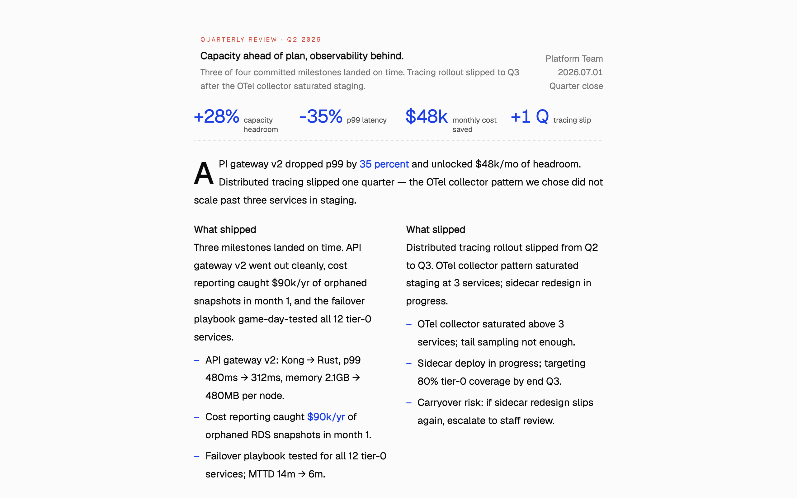
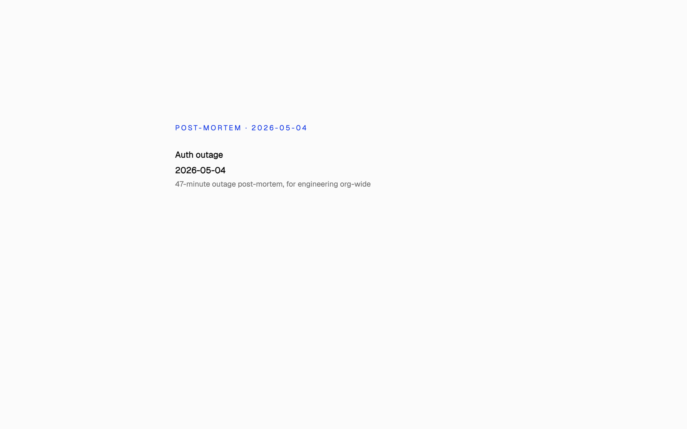
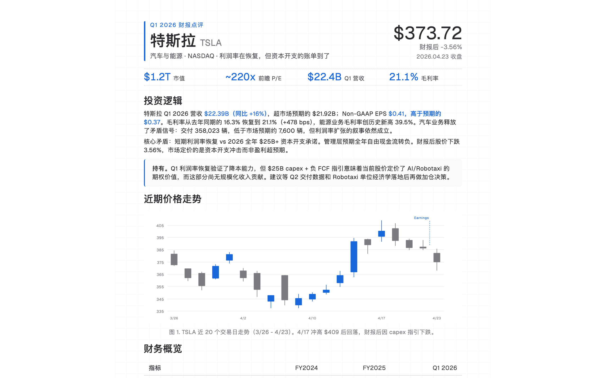
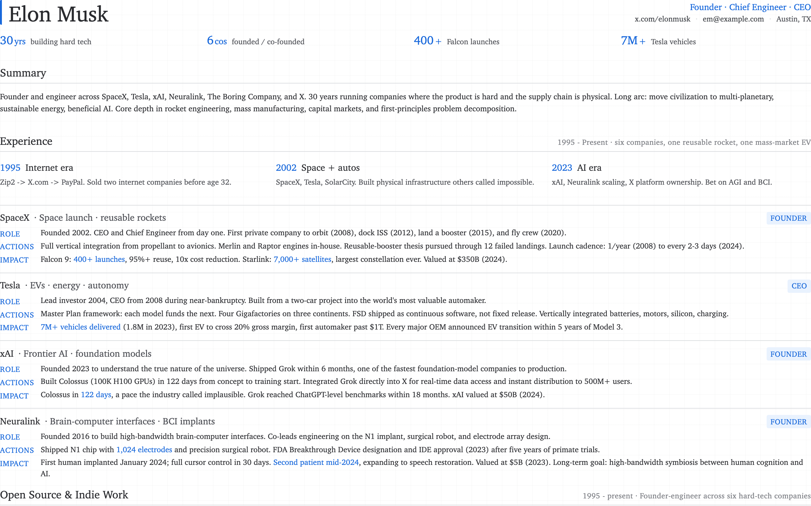
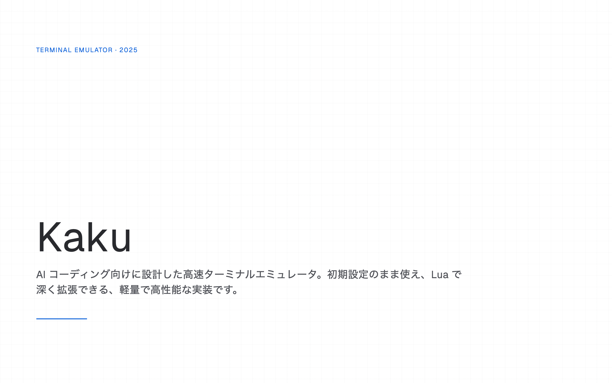
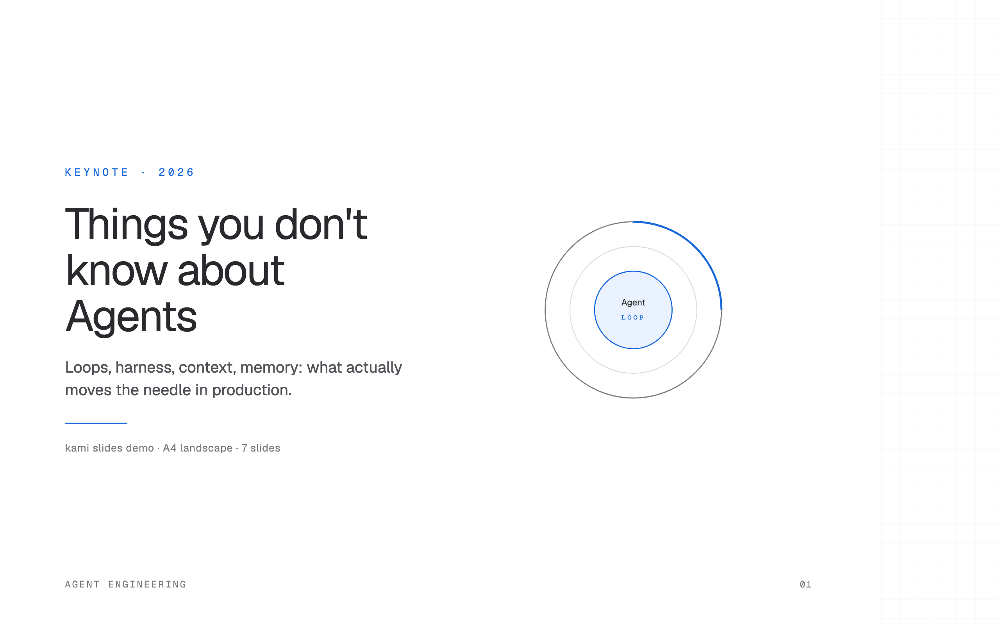

Document Design System · v0.1.0 · 2026.05
vpk-html
A terminal × blueprint document system for AI agents. Render structured payloads into single-file, offline HTML artifacts. Built for engineering work: PR writeups, code reviews, status reports, post-mortems, math handouts, prototypes, and editorial documents.
00 · See it
Curated demos
Eight curated showcases: four ported from kami (Tesla equity report, Musk resume, Kaku portfolio, agent slides) and four vpk-native (Postgres migration, RAG explainer, Q2 status, auth incident). Each is content-rich — not a smoke test.

PR Writeup
Postgres 15 → 16 Migration
Online cutover with logical replication, 7-day rollback window.

Research Explainer
Retrieval-Augmented Generation
Why retrieve before generate, and what that buys you.

Status Report
Platform Team · Q2 2026
Quarterly review — what shipped, what slipped, what's next.

Incident Report
Auth outage · 2026-05-04
47-minute outage post-mortem with timeline + action items.

Equity Report · kami port
Tesla Q1 2026
Equity research note ported from kami, restyled with vpk identity.

Resume · kami port
Founder CV
Two-page founder resume, kami structure with vpk colors and pixel display.

Portfolio · kami port
Kaku terminal portfolio
Multi-page portfolio with embedded product imagery.

Slides · kami port
Agent keynote · 7 slides
Things you don't know about Agents — loops, harness, context, memory.
01 · Templates
Eight documents, one identity
The skill ships 8 HTML templates at assets/templates/. Copy a template, fill its {{placeholders}} with real content, ship the resulting single-file HTML.
Brief
One-Pager
Executive summary, proposal, exec brief.
Report
Long-Doc
White paper, chapter, long-form report.
Correspondence
Letter
Memo, formal letter, cover letter.
Showcase
Portfolio
Case studies, work samples, project gallery.
Career
Resume
CV with Action + Scope + Result + Outcome bullets.
Presentation
Slides
HTML deck for projection or PDF export.
Finance
Equity Report
Investment memo, valuation note, research report.
Release
Changelog
Versioned release notes for any project.
02 · Usage
Invoke & fill
In Cursor / Claude Code, prefix your prompt with /vpk-html. The skill picks a template from CHEATSHEET.md, distills your source material, copies the template, fills its placeholders, and validates the output. Single offline HTML file.
# 1. Copy a template cp .agents/skills/vpk-html/assets/templates/one-pager.html docs/html/my-doc.html # 2. Fill {{placeholders}} with real content (CSS stays untouched) # 3. Validate placeholders node .agents/skills/vpk-html/scripts/build.mjs --check-placeholders docs/html/my-doc.html # 4. Verify renders + fonts load + no console errors node .agents/skills/vpk-html/scripts/build.mjs --verify docs/html/my-doc.html # Sanity-check the template library node .agents/skills/vpk-html/scripts/build.mjs --check-templates
03 · Manifesto
Design principles
White paper canvas with a 24px grid overlay. Ink-blue as the only accent. Pixel display font for headlines, serif body for prose, mono for labels. Hard 2px borders. Single-file offline output.
- 1
Surface is white paper
#ffffffwith a faint 24px grid — engineering notebook, not editorial parchment. - 2
Accent is ink-blue
#1868DBonly. No second chromatic hue. - 3
Geist Pixel (Square) carries headlines. Geist Sans carries body. Geist Mono carries labels, code, metadata. Vercel's Geist typeface trio.
- 4
Sections are framed with 2px ink-black borders + a hard 1px shadow. Blueprint feel, not soft card.
- 5
Output is a single offline HTML file. No remote fonts, stylesheets, scripts, or images.
- 6
Escape HTML by default. Use
trustedHtmlonly when the template intentionally allows trusted markup. - 7
External research and copied material must appear in a visible Sources and Credits section.
- 8
One template, one payload, one HTML file. No build graphs, no asset references back into the repo.
04 · Color
Restrained palette
One accent + cool neutrals + semantic states. Ink-blue covers no more than 5% of any page — beyond that is clutter, not restraint.
Paper
Page background
#FFFFFFInk
Body text · hard borders
#292A2EMuted
Subtle text · labels
#505258Blueprint
Accent · links · focal node
#1868DBBlueprint Tint
Focal background · math highlight
#E9F2FECode Surface
Code blocks · token chips
#F0F1F2Success
Validation pass · positive delta
#5B7F24Danger
Error · regression
#C9372C05 · Typography
Type system
Pixel display carries hierarchy, serif carries prose, mono carries function. Three fonts, no synthetic bold.
clamp(3rem, 12vw, 8rem)
line 0.82
1.85rem
line 1.05
1.25rem · 600
line 1.3
1rem · 400
line 1.8
0.9rem · 400
line 1.55
06 · Diagrams
14 SVG primitives
Standalone diagram files ported from kami and restyled with vpk-html's identity. The LLM extracts the <svg> block and embeds it inside a long-doc, portfolio, or design-system payload via section.trustedHtml.
architecture flowchart swimlane state-machine timeline tree layer-stack quadrant venn bar-chart line-chart donut-chart candlestick waterfall